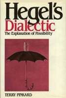

A new interpretation of Hegel’s program that assesses his conception of the role of philosophy
A new interpretation of Hegel’s program that assesses his conception of the role of philosophy


 A new interpretation of Hegel’s program that assesses his conception of the role of philosophy
A new interpretation of Hegel’s program that assesses his conception of the role of philosophy

|  |
Hegel's DialecticThe Exploration of PossibilityTerry Pinkardcloth EAN: 978-0-87722-570-6 (ISBN: 0-87722-570-2) |
"Pinkard’s book is a thoughtful and original study of Hegel. It is friendly to Hegel where there is reason to be so. It is thoughtful in the sense that it shows an awareness that Hegel’s is an important theory. It has literary quality, sober and with amusing examples strewn in, striking a balance between analysis and essay. It is modern in supplying reasons for moves in Hegel which restate what he must have had in mind without having said so.... In all, a very wonderful achievement."
—Klaus Hartmann, Tubingen University
Hegel is one of the most often cited and least read of all major philosophers. He is alternately regarded as the best and the worst that philosophy has produced. Nobody, however, disputes his influence. In Hegel’s Dialectic, Terry Pinkard offers a new interpretation of Hegel’s program that assesses his conception of the role of philosophy, his method, and some of the specific theses that he defended.
Hegel’s dialectic is interpreted as offering explanations of the possibility of basic categories. Pinkard argues that the traditional standard reading of Hegel as the esoteric metaphysician of Absolute Spirit overlooks major elements of his thought. In presenting this alternative reading of Hegel, Pinkard offers a new understanding of the role of history in Hegel’s thought and a new perspective on his moral and political thought.
Departing from the tradition of explicating Hegel exclusively in Hegelian terms, Pinkard discusses the much disputed philosopher in a way that is accessible and appealing to both analytic and non-analytic philosophers. Hegel’s Dialectic is not just an interpretation of Hegel’s thought: it is also a reconstruction and defense of Hegel’s philosophy as having something of importance to say to late twentieth-century philosophers.
Terry Pinkard is Professor and Chair of the Department of Philosophy at Georgetown University and author of Democratic Liberalism and Social Union (Temple).
© 2015 Temple University. All Rights Reserved. This page: http://www.temple.edu/tempress/titles/597_reg.html.